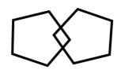

8. Clock Drawing
 |
|
| 등록번호 | 이름 | 검사일 |
| 성별 | 실제나이 | 세 /호적나이세 | 학력 | 년 교육 | ||
| 주소 | ||||||
| 검사비 지원 |
지원대상자 일반대상자 | |||||
| 내원경로 |
치매검진 후 인지저하 소견으로 내원 인지저하증상으로 자발적 내원 치매 진단검사 위해 보호자에 의해 내원 기타 (사유 : ) |
|||||
|
참고사항 (요구사항 등) |
||||||
| 주호소 | ||||||
| 과거력 | ||||||
| 투약상태 | ||||||
| 현병력 | ||||||
| 특이사항 | ||||||
/ 세/ 교육
| 이름 | 성별 | 나이 | 만세 | ||
| 교육년수 | 년 | 등록번호 | 검진일 |
| 신경심리검사 | |||||
| code | tests | score | 판정 | M - 1.5 SD | 5 percentile |
| J1 | 언어유창성검사 | ||||
| J2 | 보스톤이름대기검사 | /15 | |||
| J3 | MMSE-DS | /30 | |||
| J4 | 단어목록기억검사 | /30 | |||
| J5 | 구성행동검사 | /11 | |||
| J6 | 단어목록회상검사 | /10 | |||
| J7 | 단어목록재인검사 | /10 | |||
| J8 | 구성회상검사 | /11 | |||
| J9 | 길만들기검사 A | /360 | |||
| 길만들기검사 B | /300 | ||||
| J가 | 스트룹 단어검사 | /100 | |||
| 스트룹 색깔검사 | /100 | ||||
| 스트룹 색깔-단어검사 | /100 | ||||
| 노인우울척도 (S-GDS) | /15 | 총점 | |||
| 판정 : <M-1.5SD : (-1), <5% : (-2) , 수행하지 못함 : (F), 시도하지 않음 : (NA) | |||||
Korean version of MMSE for Dementia Screening (MMSE-DS)
| 시행차수 | 차 | ||||
| 성명 | 성별 | 등록번호 | |||
| 학력 | 년 | 실제 나이 | 세 | ||
| 검사 일자 | 평가자 | ||||
| 검사 장소 | 치매안심센터 대상자집 기타 | ||||
| 1 | 올해는 몇 년도 입니까? | 0 | 1 |
| 2 | 지금은 무슨 계절입니까? | 0 | 1 |
| 3 | 오늘은 며칠입니까? | 0 | 1 |
| 4 | 오늘은 무슨 요일입니까? | 0 | 1 |
| 5 | 지금은 몇 월입니까? | 0 | 1 |
| 6 | 우리가 있는 이곳은 무슨 도/특별시/광역시입니까? | 0 | 1 |
| 7 | 여기는 무슨 시/군/구입니까? | 0 | 1 |
| 8 | 여기는 무슨 구/동/읍/면입니까? | 0 | 1 |
| 9 | 우리는 지금 이 건물의 몇 층에 있습니까? | 0 | 1 |
| 10 | 이 장소의 이름이 무엇입니까? | 0 | 1 |
| 11 | 제가 세 가지 물건의 이름을 말씀드리겠습니다. 끝까지 다 들으신 다음에 세 가지 물건의 이름을 모두 말씀해 보십시오. 그리고 몇 분 후에는 그 세 가지 물건의 이름들을 다시 물어볼 것이니 들으신 물건의 이름을 잘 기억하고 계십시오. | ||
| 나무 자동차 모자 | |||
| 이제 000님께서 방금 들으신 3가지 물건 이름을 모두 말씀해 보세요. | |||
| 나무 | 0 | 1 | |
| 자동차 | 0 | 1 | |
| 모자 | 0 | 1 | |
| 12 | 100에서 7일 빼면 얼마가 됩니까? | 0 | 1 |
| 거기에서 7을 빼면 얼마가 됩니까? | 0 | 1 | |
| 거기에서 7을 빼면 얼마가 됩니까? | 0 | 1 | |
| 거기에서 7을 빼면 얼마가 됩니까 | 0 | 1 | |
| 거기에서 7을 빼면 얼마가 됩니까? | 0 | 1 | |
| 13 | 조금 전에 제가 기억하라고 말씀드렸던 세 가지 물건의 이름이 무엇인지 말씀하여 주십시오. | ||
| 나무 | 0 | 1 | |
| 자동차 | 0 | 1 | |
| 모자 | 0 | 1 | |
| 14 | (실제 시계를 보여주며) 이것을 무엇이라고 합니까? | 0 | 1 |
| (실제 연필을 보여주며) 이것을 무엇이라고 합니까? | 0 | 1 | |
| 15 | 제가 하는 말을 끝까지 듣고 따라해 보십시오. 한 번만 말씀드릴 것이니 잘 듣고 따라 하십시오. | ||
| 간장공장공장장 | 0 | 1 | |
| 16 | 지금부터 제가 말씀드리는 대로 해 보십시오. 한 번만 말씀드릴 것이니 잘 들으시고 그대로 해 보십시오. 제가 종이를 한 장 드릴 것입니다. 그러면 그 종이를 오른손으로 받아, 반으로 접은 다음, 무릎 위에 올려놓으십시오. | ||
| 오른손으로 받는다 | 0 | 1 | |
| 반으로 접는다. | 0 | 1 | |
| 무릎 위에 놓는다. | 0 | 1 | |
| 17 | (겹친 오각형 그림을 가리키며) 여기에 오각형이 겹쳐져 있는 그림이 있습니다. 이 그림을 아래 빈 곳에 그대로 그려보십시오.  | 0 | 1 |
| 18 | 옷은 왜 빨아서 입습니까? | 0 | 1 |
| 19 | 티끌 모아 태산ˮ은 무슨 뜻 입니까? | 0 | 1 |
|
총 점 |
/30 | ||
| 다음 각 문항을 잘 읽고 자신의 상태를 잘 나타내면 ‘예’에, 잘 나타내지 않으면 ‘아니오’에 동그라미 해 주십시오 | |||
| 지난 한 주 동안의 느낌 | 예 | 아니오 | |
| 1 | 현재의 생활에 대체적으로 만족하십니까? | 예 | 아니오 |
| 2 | 요즈음 들어 활동량이나 의욕이 많이 떨어지셨습니까? | 예 | 아니오 |
| 3 | 자신이 헛되이 살고 있다고 느끼십니까? | 예 | 아니오 |
| 4 | 생활이 지루하게 느껴질 때가 많습니까? | 예 | 아니오 |
| 5 | 평소에 기분은 상쾌한 편이십니까? | 예 | 아니오 |
| 6 | 자신에게 불길한 일이 닥칠 것 같아 불안하십니까? | 예 | 아니오 |
| 7 | 대체로 마음이 즐거운 편이십니까? | 예 | 아니오 |
| 8 | 절망적이라는 느낌이 자주 드십니까? | 예 | 아니오 |
| 9 | 바깥에 나가기가 싫고 집에만 있고 싶습니까? | 예 | 아니오 |
| 10 | 비슷한 나이의 다른 노인들보다 기억력이 더 나쁘다고 느끼십니까? | 예 | 아니오 |
| 11 | 현재 살아있다는 것이 즐겁게 생각되십니까? | 예 | 아니오 |
| 12 | 지금의 내 자신이 아무 쓸모 없는 사람이라고 느끼십니까? | 예 | 아니오 |
| 13 | 기력이 좋으신 편이십니까? | 예 | 아니오 |
| 14 | 지금 자신의 처지가 아무런 희망도 없다고 느끼십니까? | 예 | 아니오 |
| 15 | 자신이 다른 사람들의 처지보다 더 못하다고 느끼십니까? | 예 | 아니오 |
| 총 점 | /15 | ||
Seoul-Instrumental Activities of Daily Living (S-IADL)
| 항목 | 현재실행 | 잠재능력 |
|
1. 전화사용: 필요한 전화번호를 찾기, 전화걸기, 전화받기등을 혼자 하십니까? ⓞ 모르는 전화번호도 전화번호부를 찾거나 114 안내를 통해서 전화를 건다 ① 아주 잘 아는 전화번호 몇개만 전화를 건다 ② 혼자서 전화를 받을 수는 있지만 걸지는 못한다 ③ 전혀 전화를 받지도 걸지도 못한다 |
||
| 2. 물건사기, 쇼핑: 상점에 가서 필요한 물건을 고르고, 정확한 액수의 돈을 지불합니까? ⓞ 다른 사람의 도움없이 필요한 물건을 고르고 정확한 액수의 돈을 지불한다 ① 필요한 물건 한두가지 정도만 혼자서 구입하며, 도움을 주면 여러 가지 물건도 구입한다 ② 물건을 고르거나 돈을 지불할 때, 항상 동행하는 사람이 도와주어야 한다 ③ 물건을 전혀 구입하지 않는다 |
||
| 3. 음식준비, 요리하기: 재료를 준비해서 요리를 하거나 밥상을 차리는데 다른 사람의 도움없이 합니까? ⓞ 다른 사람의 도움없이 직접 요리를 하고 밥상을 차린다 ① 음식을 만들어 밥상을 차리기는 하나 간이 맞질않거나 음식맛이 떨어진다 ② 누군가 음식을 만들어 놓으면, 찾아 먹거나 데워 먹기는 한다 ③ 음식준비를 스스로 하지 않는다 |
||
| 4. 집안일 하기: 청소, 설거지, 집안수리, 집주변쓸기, 손빨래 같은 집안일을 예전처럼 잘합니까? ⓞ 별다른 어려움 없이 혼자 한다 ① 설거지, 침구정리등 몇가지 가벼운 일만 깔끔하게 하는 편이다 ② 가벼운 집안일을 하기는 하지만 깔끔하지 못해 다른 사람이 다시 손봐야 한다 ③ 집안 일을 전혀하지 않으며, 다른 사람의 도움에 전적으로 의지하고 있다 |
||
| 5. 대중교통이용 : 버스, 전철, 택시등의 대중교통을 이용하거나 직접 차를 몰고 먼거리를 다녀옵니까? ⓞ 대중교통을 이용해 혼자 다니거나, 직접 운전을 한다 ① 버스나 전철을 이용할 때 다른 사람의 도움이 필요하다 ② 택시나 자가용을 이용할 경우에도 도움이 필요하다 ③ 먼거리 여행을 하지 못한다 |
||
| 6. 근거리 외출 : 교통수단을 이용하지 않고 가까운 상점이나 약수터, 경로당 등 걸어서 다녀올 수 있는 곳의 외출을 도움없이 합니까? ⓞ 누군가의 도움없이도 가까운 거리는 혼자 외출한다 ① 지리에 익숙한 몇 곳(약수터, 상점, 시장등)만 혼자 외출한다 ② 외출을 하려면 누군가 동행해야 한다 ③ 외출을 전혀 하지 않고 집에만 있으려 한다 |
||
| 7. 약 챙겨먹기 : 정해진 시간에 정해진 양의 약을 혼자서 잘 챙겨드십니까? ⓞ 도움없이도 정확한 시간에 올바른 양의 약을 먹는다 ① 약을 준비해주면, 제시간에 혼자 약을 먹는다 ② 약 먹을 시간을 알려주면, 혼자서 약을 먹는다 ③ 약을 먹을 때마다 항상 다른 사람이 챙겨 주어야 한다 |
||
| 8. 자기 돈 관리 : 용돈이나, 공과금, 통장관리, 재산관리등 돈관리를 혼자 합니까? ⓞ 도움 없이도 돈관리를 할 수 있으며, 돈의 쓰임새를 알고 있다 ① 집안의 사소한 하루하루 수입지출(반찬거리, 집안용품)은 할 수 있으나, 공과금 납부같은은행 일이나 중요한 돈 관리는 누군가의 도움을 받아야 한다 ② 자신의 간단한 용돈 관리만 한다 ③ 금전관리를 전혀 하지 않는다 |
||
| 9. 몸단장 및 치장 : 머리빗기, 면도, 화장, 손톱깎기등 몸단장을 혼자 합니까? ⓞ 다른 사람의 도움없이 혼자의 힘으로 직접 도구(빗, 화장품, 손톱깎기등)를 찾아서 몸단장한다 ① 도구를 찾아주면 혼자서 빗질, 면도/화장, 손톱깎기등을 한다 ② 도구를 찾아 주어도 이중 한두가지는 도움을 받아야 한다 ③ 다른 사람의 도움을 받지 않고는 이 모든 것들을 하지 못한다 |
||
| 10. 가전제품 이용 : TV, 세탁기, 청소기, 다리미, 헤어드라이어등 가전제품을 사용합니까? ⓞ 전원을 끄고 켜는 것이 가능하며, 버튼을 조작하여 작동 시킬 수 있다 ① 전원을 끄고 켜는 것은 가능하며, 작동시키기 위해서는 약간의 도움이 필요하다 ② 전원을 끄고 켜는 것만 가능하다 ③ 가전제품을 사용하지 않으며, 사용하기 위해서는 전적으로 도움이 필요하다 |
||
| 11. 소지품 관리하기 : 옷, 안경, 지갑, 열쇠, 휴대폰 등과 같은 자신의 소지품들을 혼자 관리합니까? ⓞ 별다른 도움없이도 자기 물건을 지정된 곳에 놓고 다시 찾을 수 있다 ① 자신의 소지품을 찾지 못하는 경우가 가끔 있다 ② 소지품을 어디에 놓았는지 찾지 못하는 경우가 자주 있다 ③ 소지품을 찾지 못해 항상 옆에서 찾아주어야 한다 |
||
| 12. 문단속하기 : 열쇠나 비밀번호등을 이용하여 대문을 정확하게 열거나 닫습니까? ⓞ 다른 사람의 도움 없이도 문단속을 잘한다 ① 문단속하도록 이야기하면, 혼자 문을 열고 잠근다 ② 문단속을 하기는 하나 제대로 하지못해 항상 확인해 봐야한다 ③ 문단속을 하지 않는다 |
||
| 13. 약속과 모임 지키기 : 사전에 계획된 모든 종류의 모임(야유회나소풍, 집안생일, 제사) 등, 다른 사람들과의 약속이나 모임을 잘 지켰습니까? ⓞ 달력에 적어놓거나 기억을 잘해서, 대부분의 약속을 잘지켰다 ① 대체로 잘기억하는 편이지만, 가끔씩 잊어버리고 약속을 못 지킬때도 있다 ② 약속이 있는 날이나 그 전날, 옆에서 약속시간을 가르쳐줘야 기억할 수 있다 ③ 약속을 가르쳐주었음에도 불구하고, 약속자체를 기억하지 못한다 |
||
| 14. 최근에 있었던 일 이야기하기 : 최근 한달동안 있었던 집안 일이나, 국내의 중요한 뉴스등에 대해 이야기합니까? ⓞ 간접적으로 전해들었거나 TV에서 본 것등을 기억해서 이야기한다 ① 전해들은 것은 자주 잊어버리지만 직접 봤던 일에 대해서는 이야기한다 ② 직접 봤던 일도 종종 잊어버려 이야기하지 못하는 때가 있다 ③ 최근에 있었던 일을 전혀 이야기하지 못한다 |
||
| 15. 여가활동, 취미생활 : 예전부터 해오던 화투, 장기, 바둑, 뜨개질, 정원 가꾸기 등의 소일거리나 마실, 노인정 가기와 같은 여가, 취미생활을 합니까? ⓞ 주위의 도움없이 자신이 원하는 취미생활을 항상 하고있다 ① 가끔씩 취미생활을 하는 편이다 ② 취미생활이 상당히 제한되어 있어서 기껏해야 노인정에서가서 대화하는 정도다 ③ 여가활동이나 취미생활을 하지 않는다 |
||
| 점수 | 현재실행 | 잠재능력 |
| /45 | /45 |
| CDR 0 | CDR 0.5 | CDR 1 | CDR 2 | CDR 3 | CDR 4 | CDR 5 | |
| 기억력 Memory | 기억장애가 전혀 없거나 경미한 건망증이 때때로 나타남. |
경하지만 지속적인 건망증 : 사건의 부분적인 회상만 가능 : "양성 건망증" |
중등도의 기억장애 : 최근 것에 대한 기억장애가 더 심함 : 일상생활에 지장이 있음 |
심한 기억장애 : 과거에 반복적으로 많이 학습한 것만 기억 : 새로운 정보는 금방 잊음. |
심한 기억장애 : 부분적이고 단편적인 사실만 보존됨. |
부분적인 사실조차도 보통 잊어버림. 난해하거나 부적절한 말을 사용하기 때문에 기억력을검사하기 힘든경우가 잦음. |
의미 있는 기억 기능이 전혀 없음. 이해력이 없거나 둔한 경우가 잦음. |
| 지남력 Orientation | 정상 |
시간에 대한 경미한 장애가 있는 것 외에는 정상 |
시간에 대해 중등도의 장애가 있음 : 사람과 장소에 대해서 검사상으로는 정상이나 실생활에서 길 찾기에 장애가 있을 수 있음 |
시간에 대한 지남력은 상실되어 있고 장소에 대한 지남력 역시 자주 손상됨. |
사람에 대한 지남력만 유지되고 있음. |
자신의 이름에 대해서만 때때로 반응함 |
자신에 대한 인식이 전혀 없음 |
| 판단력과 문제해결 능력 Judgement and Problem solving | 일상생활의 문제를 잘 해결하고 사업이나 재정문제도 잘처리함 : 과거에 비해 판단력은 아직 좋음 |
문제해결능력, 유사성, 상이성 해석에 대한 경미한 장애 |
문제해결능력, 유사성, 상이성 해석에 대한 중등도의 장애 : 사회생활에 대한 판단력은 대부분 유지되어 있음. |
문제해결, 유사성, 상이성 해석에 심한 장애 : 사회생활에서의 판단력이 대부분 손상됨. |
판단이나 문제해결이 불가능함. |
단순한 지시나 명령에 대해서도 수행할 능력이 없음. |
문제에 대한 인식이나 주변환경에 대한 이해가 전혀 없음. |
| 사회활동 Community Affairs | 직장생활, 물건사기, 자원봉사, 사회적활동 등에서 보통수준의 독립적 기능이 가능함. |
이와 같은 활동에 있어서의 장애가 의심되거나 약간의 장애가 있음. |
이와 같은 활동의 일부에 아직 참여하고 있고 언뜻 보기에는 정상활동을 수행하는 것처럼 보이나 사실상 독립적인 수행이 불가능함. |
집 밖에서 독립적인 활동을 할 수 없으나 외견상으로는 집 밖에서도 기능을 잘 할 수 있어 보임. |
집 밖에서 독립적인 활동을 할 수 없고 외견상으로도 가정을 떠나 외부에서는 정상적인 기능을 할 수 없어 보임. |
어떠한 사회적 상황에서도 의미 있는 참여를 할 수 없음. |
문제에 대한 인식이나 주변환경에 대한 이해가 전혀 없음. |
| 집안생활과 취미 Home and Hobbies | 집안생활, 취미생활, 지적인 관심이 잘 유지되어 있음. |
집안생활, 취미생활, 지적인 관심이 다소 손상되어 있음. |
집안생활에 경하지만 분명한 장애가 있고, 어려운 집안일은 포기된 상태임. 복잡한 취미나 흥미(예를들어 바둑)는 포기됨 |
아주 간단한 집안일만 할 수 있고, 관심이나 흥미가 매우 제한됨. |
집안에서의 의미 있는 기능 수행이 없음. |
어떠한 취미활동이나 집안일에도 의미있는 참여를 할 수 없음. |
어떠한 활동에도 전혀 참여할 수 없음. |
| 위생 및 몸치장 Personal Care | 정상 |
정상 |
가끔 개인위생에 대한 권고가 필요함. |
옷 입기, 개인위생, 개인 소지품의 유지에 도움이 필요함. |
개인위생과 몸치장의 유지에 많은 도움이 필요하며, 자주 대소변의 실금이 있음. |
옷 입기나 식사를 하려는 시도는 있음. 도움없이는 이동하지 못함. |
식사 시 먹여 주어야 함. 누워 지내는 상태임. |
| Score | |||||||
| Sum of Boxes | |||||||
| 1= | 인지 장애 없음 | 임상적으로 정상, 주관적으로 기억 장애를 호소하지 않음. 임상 면담에서도 기억 장애가 나타나지 않음 |
| 2= | 매우 경미한 인지 장애 | 건망증의 시기. 주관적으로 다음과 같은 기억 장애를 호소함: (1) 물건을 둔 곳을 잊음: (2) 전부터 잘 알고 있던 사람 이름 또는 물건 이름이 생각나지 않음. 임상면담에서 기억 장애의 객관적인 증거는 없음. 직장이나 사회 생활에 문제 없음. 이러한 자신의 증상에 적절한 관심을 보임 |
| 3= | 경미한 인지 장애 | 분명한 장애를 보이는 가장 초기 단계. 그러나 숙련된 임상가의 자세한 면담에 의해서만 객관적인 기억 장애가 드러남. 새로이 소개 받은 사람의 이름을 기억하기 어려울 수 있음. 책을 읽어도 예전에 비하여 기억하는 내용이 적을 수 있음. 단어나 이름이 금방 떠오르지 않는 것을 주위에서 알아차리기도 함. 귀중품을 엉뚱한 곳에 두거나 잃어버린 적이 있을 수 있음. 낯선 곳에서 길을 잃은 적이 있을 수 있음. 임상 검사에서 집중력 감퇴가 보일 수 있음. 직업이나 사회 생활에서 수행 능력이 감퇴함. 동료가 환자의 일 수행 능력이 떨어짐을 느낌. 환자는 이와 같은 사실을 부인할 수 있음. 겸하거나 중등도의 불만증 이 동반될 수 있음. 현재 상태로는 더 이상의 해결할 수 없는 힘든 사회적 요구에 직면하면 불안증이 증가됨. |
| 4= | 중증도의 인지 장애 | 후기 혼동의 시기. 자세한 임상 면담 결과 분명한 인지 장애. 다음 영역에서 분명한 장애가 있음: (1) 자신의 생활의 최근 사건과 최근 시사 문제들을 잘 기억하지 못함: (2) 자신의 중요한 과거사를 잊기도 함: (3) 순차적 빼기(예:100-7, 93-7 ...) 에서 집중력 장애가 관찰됨: (4) 혼자서 외출하는 것과 금전 관리에 지장이 있음. 그러나 대개 다음 영역에서는 장애가 없음: (1) 시간이나 사람에 대한 지남력: (2) 잘 아는 사람과 낯선 사람을 구분하는 것: (3) 익숙한 길 다니기. 더 이상 복잡한 일을 효율적이고 정확하게 수행할 수 없음. 자신의 문제로 부정하려고 함. 감정이 무디어지고 도전적인 상황을 피하려고 함. |
| 5= | 초기 중증의 인지 장애 | 초기 치매. 다른 사람의 도움 없이는 더 이상 지낼 수 없음. 자신의 현재 일상 생활과 관련된 주요한 사항들을 기억하지 못함(예를 들면, 집주소나 전화번호, 손자와 같은 가까운 친지의 이름 또는 자신이 졸업한 학교의 이름을 기억하기 어려움). 시간(날짜, 요일, 계절 등)이나 장소에 대한 지남력이 자주 상실됨. 교육을 받은 사람이 40에서 4씩 또는 20에서 2씩 거꾸로 빼나가는 것을 하지 못하기도 함. 이 단계의 환자들은 대개 자신이나 타인에 관한 주요한 정보는 잘 간직하고 있음. 자신의 이름을 알고 있고 대개 배우자와 자녀의 이름도 알고 있음. 화장실 사용이나 식사에 도움이 필요로 하지는 않으나 적절한 옷을 선택하거나 옷을 입는데 문제가 있을 수 있음(예: 신발의 좌우를 바꾸어 신음). |
| 6= | 중증의 인지 장애 | 중기 치매. 환자가 전적으로 의존하고 있는 배우자의 이름을 종종 잊음. 최근의 사건들이나 경험들을 거의 기억하지 못함. 오래된 일은 일부 기억하기도 하나 매우 피상적임. 일반적으로 주변 상황, 년도, 계절을 알지 못함. '1-10' 또는 거꾸로 '10-1'까지 세는데 어려움이 있을 수 있음. 일상 생활에 상당한 도움을 필요로 함 (예를 들면 대소변 실수가 있음). 또한 외출 시 도움이 필요하나 때때로 익숙한 곳에 혼자 가기도 함. 낮과 밤의 리듬이 자주 깨짐. 그러나 거의 항상 자신의 이름은 기억함. 잘 아는 사람과 낯선 사람을 대개 구분할 수 있음. 성격 및 감정의 변화가 나타나고 기복이 심함: (1) 망상적인 행동(예를 들면 자신의 배우자가 부정하다고 믿음. 주위에 마치 사람이 있는 것처럼 얘기하거나 거울에 비친 자기와 얘기함): (2) 강박적 증상(예를 들면 단순히 바닥을 쓸어내는 행동을 반복함): (3) 불안증, 초조, 과거에 없었던 난폭한 행동이 나타남:(4) 무의지증, 즉 목적 있는 행동을 결정할 만큼 충분히 길게 생각할 수 없기 때문에 나타나는 의지의 상실. |
| 7= | 후기 중증의 인지 장애 | 말기 치매. 모든 언어 구사 능력이 상실됨. 흔히 말은 없고 단순히 알아들을 수 없는 소리만 냄. 요실금이 있고 화장실 사용과 식사에도 도움이 필요함. 기본적인 정신 운동 능력이 상실됨(예를 들면 걷기). 뇌는 더 이상 신체에 무엇을 하라고 명령하는 것 같지 않음. 전반적인 피질성 또는 국소적 신경학적 징후나 증상들이 자주 나타남. |
| GDS | ||
|
|